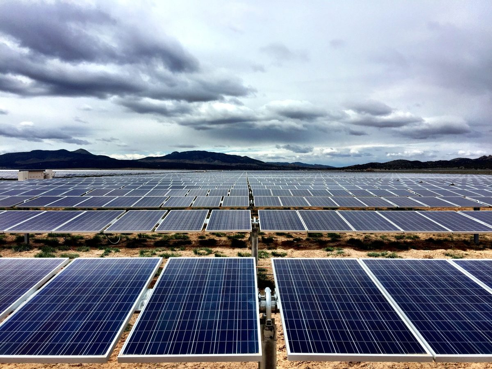

미국 유타 16개 지역, 2027년 1월 '공동체 청정에너지 프로그램' 시작…주택 월 4달러 더 내고 저소득 가구는 무료

지자체 협의체 '유타 재생가능 공동체'가 로키마운틴파워와 운영, 주민은 기본 가입되고 언제든 탈퇴 가능…태양광 2곳 최종 계약 협상, 새 청정에너지 최대 500MW 목표
미국 유타주 16개 지역의 로키마운틴파워 전기 이용자가 2027년 1월 1일부터 새 재생에너지 설비를 짓는 데 돈을 보태는 '공동체 청정에너지 프로그램(CCEP)'에 들어간다. 참여 지자체들이 꾸린 협의체 '유타 재생가능 공동체(Utah Renewable Communities)'가 전력회사 로키마운틴파워와 함께 운영하는 이 프로그램은 참여 지역의 전기를 시간을 두고 100% 재생에너지로 바꾸는 것을 목표로 하며, 대상은 솔트레이크시티·오그던·파크시티·모압 등 13곳과 그랜드·솔트레이크·서밋 카운티의 비법인 지역이다. 프로그램에 남은 주택 고객은 1월부터 전기요금에 월 4달러가 더 붙고, 유타 가정용 전기 생명선 프로그램(HELP) 대상 가구는 추가 비용 없이 참여하며, 상업 등 비주거 고객은 kWh당 0.00609달러에 월 12센트가 붙어 전기요금이 4~9% 늘어날 것으로 추산됐다. 이용자는 11월 우편과 이메일로 안내와 탈퇴 방법을 받고 언제든 빠질 수 있는데, 2026년 11월 2일부터 2027년 5월 1일까지는 수수료가 없고 그 뒤에는 주택·소상공인 30달러, 큰 비주거 고객은 사용량에 따른 탈퇴 수수료를 낸다. 협의체는 2025년 재생에너지 사업 제안을 받아 지난달 이사회에서 태양광 사업 2곳을 최종 계약 협상 대상으로 골랐고, 이 사업들은 2028~2030년 사이 완공돼 전력망에 연결될 예정이다. 프로그램 쪽은 앞으로 로키마운틴파워 전력망에 최대 500MW의 새 청정에너지를 더할 수 있다고 밝혔으나, 태양광 2곳의 이름과 용량, 설비 소유 구조는 알려지지 않았다.
시민에너지 관점
유타는 2019년 3월 '공동체 재생에너지법'을 만들어 지역 단위 재생에너지 프로그램을 공익사업위원회 승인 아래 꾸리게 하면서 참여 주민에게 벌칙 없이 빠질 수 있는 기간을 보장했는데, 이번 프로그램은 그 법이 7년여 만에 실제 전기요금 고지서에 오르는 단계다. 주민을 먼저 넣고 원하면 빼 주는 방식이 동의 없는 부담이라는 우려가 나올 수 있지만, 주택 월 4달러로 비용을 잘게 나누고 저소득 가구는 면제하며 반년 동안 수수료 없이 빠질 수 있게 한 설계는 참여의 문턱을 낮추면서 선택권도 지키는 방법이다. 다만 16개 지역 주민이 함께 돈을 내는데도 새 태양광을 누가 소유하는지는 드러나지 않았고, 비용을 나눈 지역이 발전소 지분과 수익까지 함께 가질 때 '공동체' 프로그램이라는 이름이 온전해진다. 국내에서도 이웃 지자체 여러 곳이 묶여 주민 수요를 모으고 저소득층 부담을 덜어 주는 방식으로 새 재생에너지를 짓되, 처음부터 주민 출자 몫을 정해 두는 지자체 연합 모델을 논의해야 한다.
출처: KTVX ABC4 Utah 2026-10-28 Willow Downs 원문 보기
출처: Yahoo News (KTVX ABC4 Utah 전재) 2026-10-28 Willow Downs 원문 보기
米ユタ州の16地域、2027年1月に「コミュニティ・クリーンエネルギー・プログラム」開始…住宅は月4ドル上乗せ、低所得世帯は無料
自治体の協議体「ユタ・リニューアブル・コミュニティーズ」がロッキーマウンテン・パワーと運営、住民は自動加入でいつでも脱退可能…太陽光2件と最終契約交渉、新たなクリーンエネルギー最大500MWを目標
米ユタ州の16地域でロッキーマウンテン・パワーの電気を使う利用者が、2027年1月1日から新しい再生可能エネルギー設備の建設に資金を出す「コミュニティ・クリーンエネルギー・プログラム（CCEP）」に加わる。参加自治体がつくる協議体「ユタ・リニューアブル・コミュニティーズ（Utah Renewable Communities）」が電力会社ロッキーマウンテン・パワーと共同で運営するこのプログラムは、参加地域の電気を時間をかけて100%再生可能エネルギーに切り替えることを目指し、対象はソルトレイクシティ、オグデン、パークシティ、モアブなど13地域と、グランド、ソルトレイク、サミットの3郡の非法人地域だ。プログラムに残る住宅の利用者は1月から電気料金に月4ドルが上乗せされ、ユタ州の家庭用電気ライフライン・プログラム（HELP）の対象世帯は追加負担なしで参加でき、商業など非住宅の利用者はkWh当たり0.00609ドルと月12セントが加わり、電気料金が4～9%増えると見込まれている。利用者は11月に郵便とメールで案内と脱退方法を受け取り、いつでも抜けることができ、2026年11月2日から2027年5月1日までは手数料がかからないが、その後は住宅・小規模事業者が30ドル、大口の非住宅利用者は使用量に応じた脱退手数料を払う。協議体は2025年に再生可能エネルギー事業の提案を募り、先月の理事会で太陽光事業2件を最終契約交渉の対象に選んでおり、これらの事業は2028～2030年に完成して電力網に接続される予定だ。プログラム側は将来的にロッキーマウンテン・パワーの電力網に最大500MWの新しいクリーンエネルギーを加えられるとしているが、太陽光2件の名称や容量、設備の所有構造は明らかになっていない。
市民エネルギーの視点
ユタ州は2019年3月に「コミュニティ再生可能エネルギー法」を制定し、地域単位の再生可能エネルギー・プログラムを公益事業委員会の承認の下でつくれるようにするとともに、参加住民にペナルティなしで抜けられる期間を保障したが、今回のプログラムはその法律が7年余りを経て実際の電気料金の請求書に載る段階だ。住民をまず加入させ、望めば抜けさせる方式は同意のない負担だという懸念もありうるが、住宅で月4ドルと費用を細かく分け、低所得世帯は免除し、半年間は手数料なしで抜けられるようにした設計は、参加のハードルを下げつつ選択権も守る方法だ。ただ、16地域の住民がともに費用を払うのに、新しい太陽光を誰が所有するのかは示されておらず、費用を分け合う地域が発電所の持ち分と収益まで共に持ってこそ「コミュニティ」プログラムという名前が完全になる。韓国でも近隣の複数の自治体が手を組んで住民の需要をまとめ、低所得層の負担を軽くする方式で新たな再生可能エネルギーを建てつつ、最初から住民出資の持ち分を定めておく自治体連合モデルを議論すべきだ。
出典: KTVX ABC4ユタ 2026-10-28 ウィロー・ダウンズ 原文を読む
出典: Yahooニュース（KTVX ABC4ユタ転載） 2026-10-28 ウィロー・ダウンズ 原文を読む
美国犹他州16个地区2027年1月启动"社区清洁能源计划"……住宅每月多付4美元，低收入家庭免费
由地方政府联合体"犹他可再生社区"与落基山电力公司共同运营，居民默认加入、可随时退出……2个光伏项目进入最终合同谈判，目标新增清洁能源最多500MW
美国犹他州16个地区使用落基山电力公司（Rocky Mountain Power）电力的用户，将从2027年1月1日起加入为新建可再生能源设施出资的"社区清洁能源计划"（CCEP）。该计划由参与地方政府组成的联合体"犹他可再生社区"（Utah Renewable Communities）与落基山电力公司共同运营，目标是让参与地区的用电逐步转向100%可再生能源，覆盖范围包括盐湖城、奥格登、帕克城、摩押等13个地区，以及大县（Grand County）、盐湖县、萨米特县的未建制地区。留在计划中的住宅用户自1月起每月电费将增加4美元，符合犹他州家庭电力生命线计划（HELP）条件的家庭可免费参与；商业等非住宅用户每千瓦时加收0.00609美元，另加每月12美分，预计电费将增加4%至9%。用户将在11月通过邮件和电子邮件收到说明及退出方法，可随时退出：2026年11月2日至2027年5月1日期间退出不收费，此后住宅和小商户需缴纳30美元，大型非住宅用户则按用电量缴纳退出费。该联合体在2025年征集可再生能源项目提案，上月理事会选定2个光伏项目进入最终合同谈判，这些项目预计在2028年至2030年间建成并网。计划方表示，今后最多可为落基山电力公司电网新增500MW清洁能源，但这2个光伏项目的名称、容量以及设施的所有权结构尚未公开。
市民能源视角
犹他州于2019年3月制定《社区可再生能源法》，允许在公用事业委员会批准下组建地区性可再生能源计划，同时保障参与居民有一段无罚款退出的期限；此次计划意味着这部法律在七年多之后真正落到了电费账单上。或许有人担心，先把居民纳入、愿意再退出的做法等于未经同意的负担；但把住宅成本分摊为每月4美元、免除低收入家庭费用、并给予半年免费退出期的设计，是在降低参与门槛的同时保护选择权的办法。不过，16个地区的居民共同出钱，新光伏电站归谁所有却没有说明；只有分担成本的地区也共同持有电站股份和收益，"社区"计划之名才算名副其实。韩国也应讨论由相邻多个地方政府联合起来、汇聚居民需求并减轻低收入群体负担来新建可再生能源，同时从一开始就定好居民出资份额的地方联合模式。
来源: KTVX ABC4犹他 2026-10-28 威洛·唐斯（Willow Downs） 查看原文
来源: 雅虎新闻（转载KTVX ABC4犹他） 2026-10-28 威洛·唐斯（Willow Downs） 查看原文
Sixteen Utah communities to launch a Community Clean Energy Program in January 2027, adding $4 a month for homes and nothing for low-income households
Run by the municipal coalition Utah Renewable Communities with Rocky Mountain Power, the program enrolls residents by default and lets them leave at any time; two solar projects are in final contract talks, with up to 500MW of new clean energy in view
Rocky Mountain Power customers in 16 Utah communities will join the Community Clean Energy Program (CCEP) on Jan. 1, 2027, paying toward the construction of new renewable energy facilities. The program is run by Utah Renewable Communities, a coalition formed by the participating local governments, together with the utility Rocky Mountain Power, and aims to move participating communities toward 100% renewable electricity over time; it covers 13 places including Salt Lake City, Ogden, Park City and Moab, plus the unincorporated areas of Grand, Salt Lake and Summit counties. Residential customers who remain in the program will see $4 a month added to their bills from January, households eligible for Utah's Home Electric Lifeline Program (HELP) can take part at no extra cost, and businesses and other non-residential customers will pay $0.00609 per kWh plus 12 cents a month, which is estimated to raise their bills by 4% to 9%. Customers will get notices by mail and email in November explaining the program and how to opt out, and they can leave at any time: there is no fee between Nov. 2, 2026, and May 1, 2027, after which homes and small businesses pay a $30 termination fee and larger non-residential customers pay exit fees based on usage. The coalition sought renewable project proposals in 2025, and last month its board picked two solar projects for final contract negotiations; they are expected to be completed and connected to the grid between 2028 and 2030. Program leaders say the effort could eventually add up to 500MW of new clean energy to Rocky Mountain Power's system, but the names and capacities of the two solar projects and who will own the facilities have not been disclosed.
Citizen Energy View
Utah passed its Community Renewable Energy Act in March 2019, allowing community renewable programs to be set up subject to Public Service Commission approval while guaranteeing participating customers a window to leave without penalty, and this program is the point, some seven years later, at which that law reaches actual power bills. Some may worry that enrolling residents first and letting them leave if they wish imposes a cost without consent, but a design that spreads the cost thin at $4 a month for homes, exempts low-income households and allows half a year of fee-free exit lowers the barrier to joining while keeping the choice in residents' hands. Still, residents across 16 communities are paying in together without being told who will own the new solar plants, and the "community" in the program's name will be complete only when the places that share the cost also share ownership stakes and income in the plants. In Korea too, neighboring local governments should discuss a coalition model that pools residents' demand to build new renewables while easing the burden on low-income households, and that sets aside a share for resident investment from the start.
Source: KTVX ABC4 Utah 2026-10-28 Willow Downs Read the original
Source: Yahoo News (republished from KTVX ABC4 Utah) 2026-10-28 Willow Downs Read the original